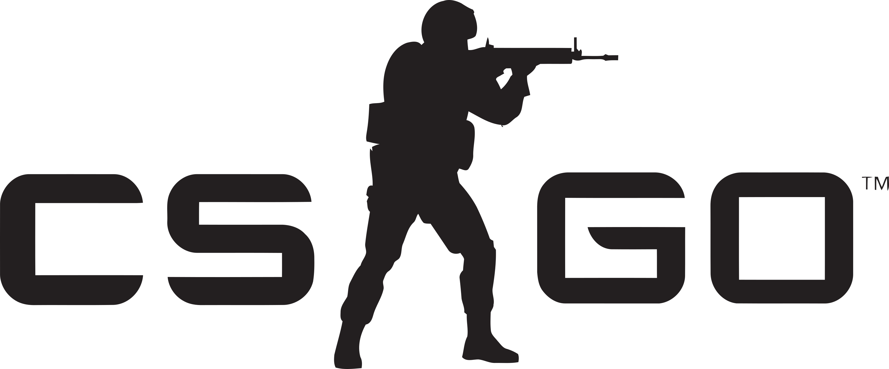
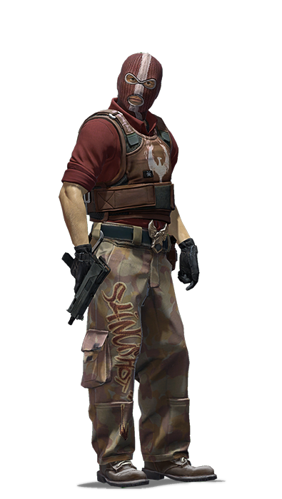
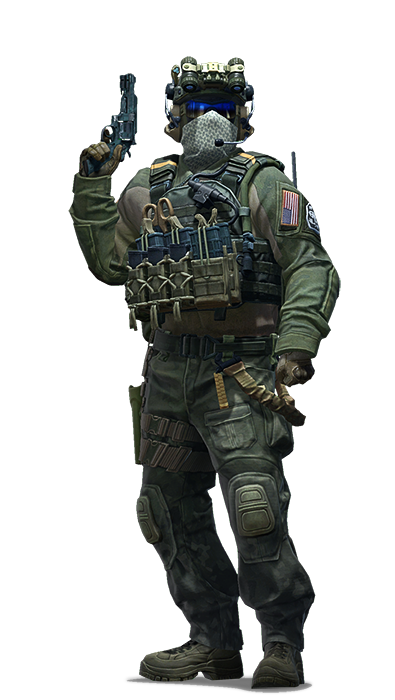
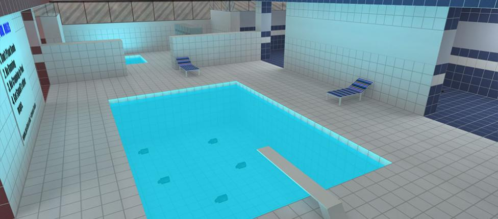
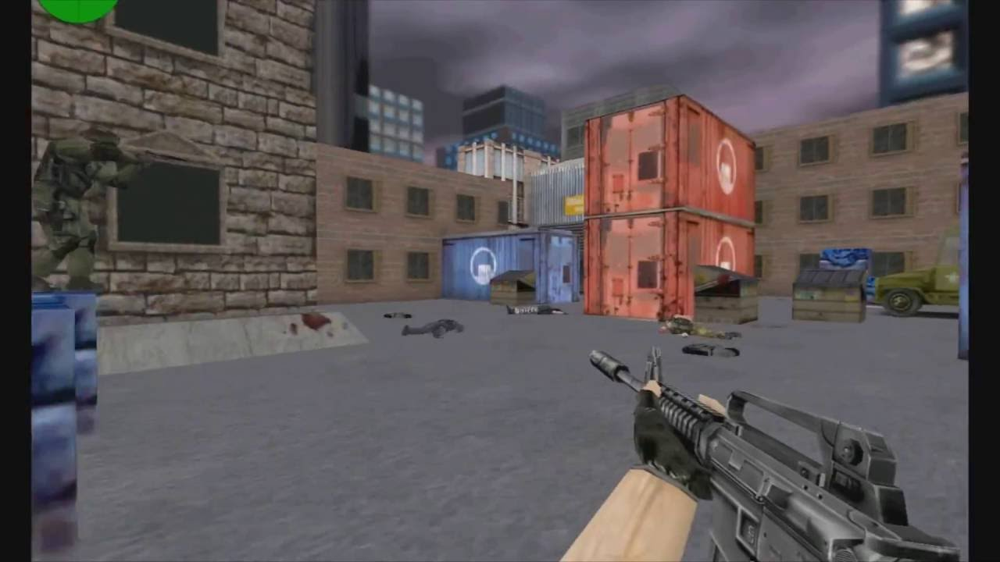
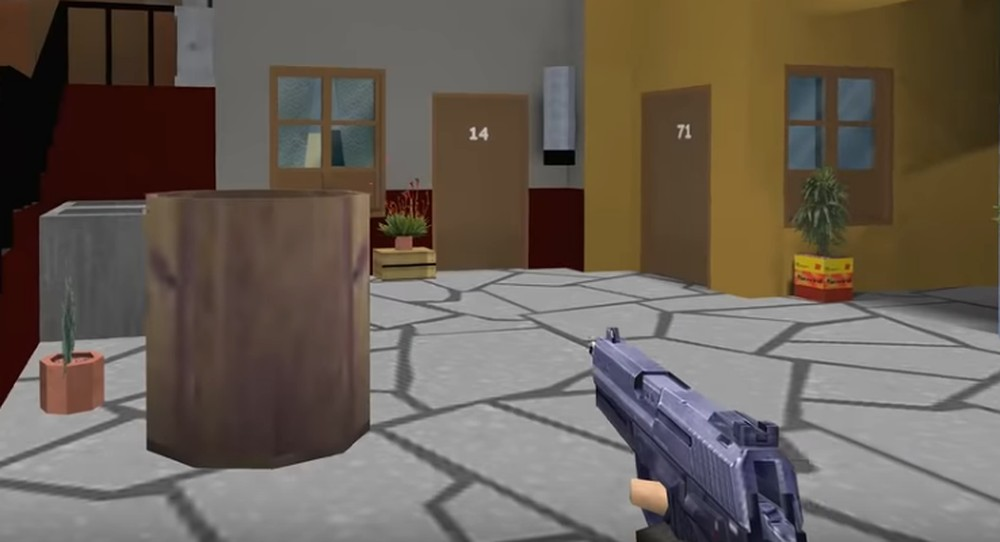
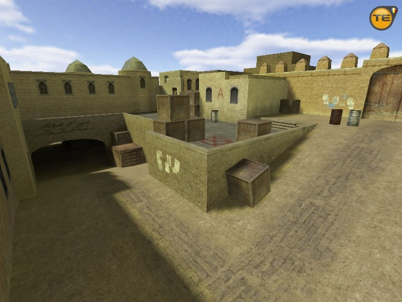

POOL DAY
O mapa Pool Day,
também chamado de
mapa da piscina, é
um dos mais
conhecidosdo jogo.

CS_ASSAULT
cs_assault, também
muito conhecido e
jogado pela
comunidade.O cenário
se inicia em uma
cidade vazia, com
carros, caminhões.

CHAVES
Mapa dedicado ao
seriado mexicano
Chaves, cs_chaves
ficou famoso em todo
o mundo.

DUST 2
O mapa mais famoso e
mais jogado do
Counter-Strike 1.6
em todo o mundo, o
de_dust2.